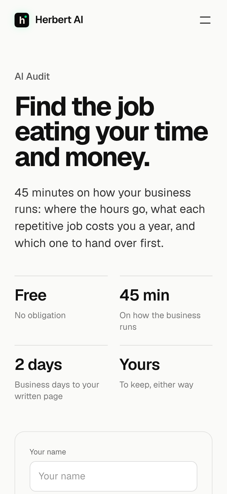
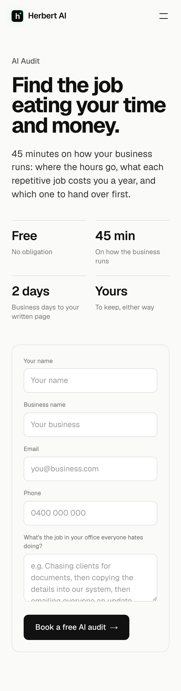
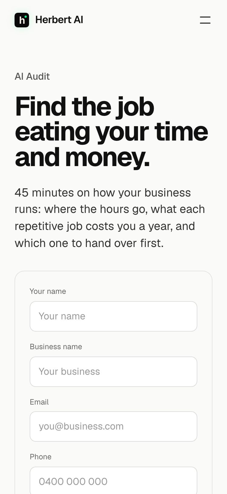
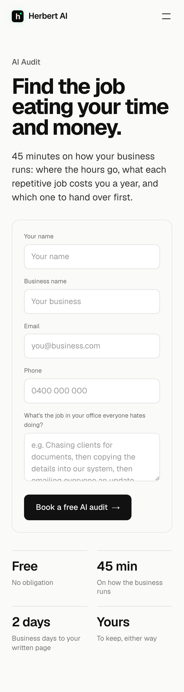
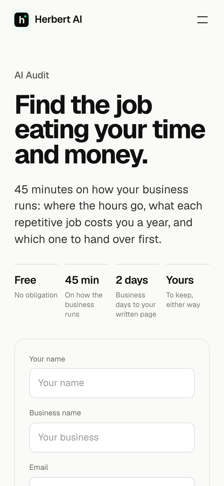
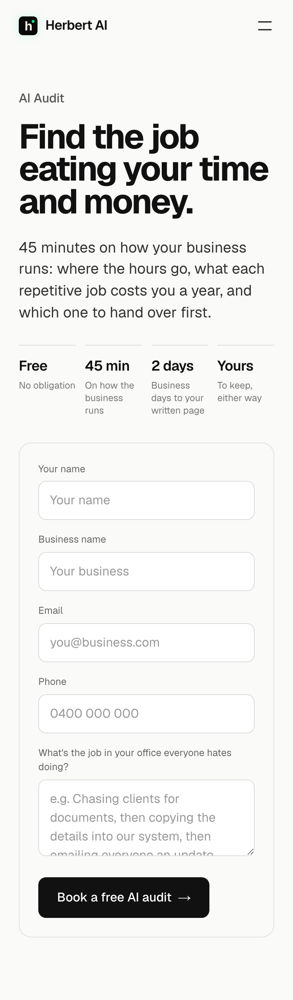

At 375x812. Today the first screen ends at the form's top edge and the book button is a screen and a half down. The laptop layout is the same in every option.
TodayHeading, intro, the four terms as a 2x2 grid, then the form. The first screen ends at the form's top edge.

First screen

The whole hero
1. The form after the intro, the terms under itHeading, intro, then the form: the name, business, email and phone fields show in the first screen. The four terms follow the button as the small print you read before pressing. Recommended: on a phone the page is there to take the booking.

First screen

The whole hero
2. The terms in one rowToday's order with the terms as one row of four, smaller. The form starts about 170px higher: its first field shows in the first screen.

First screen

The whole hero
3. A button to the formToday's order, with the form's button under the intro on phones only, jumping down to the form. The action is in the first screen; the form stays after the terms.